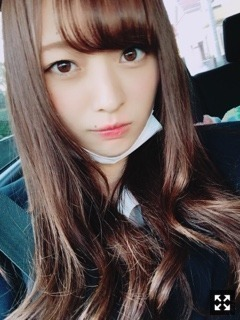
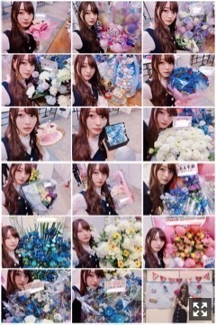
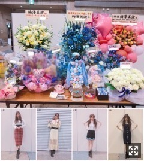
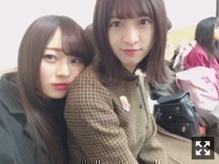
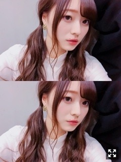

暖かくなってきたね〜
みなさまこんにちは！！
乃木坂46 ３期生の
梅澤美波です！

一年前の今日、
高校の卒業式の日の写真です！
チラッと見えてるのは制服！
なんか若い気がする（笑）
高校ご卒業された皆様、
卒業おめでとうございます！
まだの方もいると思いますが、今日の方が多いのかな？( .. )
高校卒業して今日でちょうど１年が経ちました！
まだ１年、もう１年、、
なんだか２つの世界が同時に動いているような錯覚をよくおこします。
高校３年生の９月に乃木坂に加入して、
レッスンや活動と高校生活
同時進行で東京と行き来する生活が始まって
今となれば良い思い出だけど
先生にはたくさん迷惑をかけたし
変に活動に触れることもなく、いつも通りの接し方でいつも側にいてくれた友人には
感謝してもしきれないくらい( .. )
高校生活が懐かしいなあ〜
友達に会いたくなります( .. )
皆様は高校生の思い出、ありますか？
現役の方は学校楽しいですか？☺︎
ついに３月だね〜
今日も頑張ってきたよ〜！
外出たら暖かくてびっくり！
とっても嬉しいんだけど
冬が去ってゆくことが
悲しくて悲しくて、、
な梅澤です∠( ˙-˙ )／（笑）
冬服ももう終わりか〜
悲しいな〜
冬服がいちばんすきなの！
春はね、
色んなカラー挑戦してみようって思っておる！◎
書きたいことは山々なのですが
まずは最近あった握手会から！
２／２５ @パシフィコ横浜
お越しくださった皆様ありがとうございました！
久しぶりの握手会だったから
前日からなんかすごい緊張しちゃって
ワクワクしながら洋服決めて
楽しみにしておりました☺︎
初めましての方が多くて
会いに来て下さる方が増えたことを
実感した１日でした。
少しでもまた会いたい話したいって
思ってもらえてたら嬉しいなあ
久しぶりの方もいつもの方も
相変わらずの顔ぶれの方も
楽しかったよありがとう！
話したいこと多すぎて
時間足りないね☺︎（笑）
受験終わったよ〜とか
就活終わったよ〜とか
内定決まった！受験合格したよ！とか
嬉しい報告がたくさん聞けて
私まで嬉しくなったよ☺︎
本当にお疲れ様でした！
ゆっくり体休めてね☺︎
あとはこれから就活だから
来れなくなるって方もたくさんいて
寂しくなっちゃった( .. )
けど、また戻ってきてくれるように
久しぶりに会えた時に
パワーアップしてる梅澤を見せられるように
私も頑張らねば！と思いました∠( ˙-˙ )／
握手会はたくさん元気をもらえます
ありがとう！


お花ちゃんたちです〜
たくさんあってすっごい嬉しかった(；；)
朝レーンに行ったら
可愛い飾り付けがしてあって
あれ？ここ私のレーンであってるよね、、？
生誕祭ってもう終わったよな、、
なんでこんな可愛くなってるのー！
って思ったら
生誕祭の方達がバレンタインにって(；；)
素敵すぎる〜朝からありがとう( .. )♡

色鮮やかで素敵だ〜
幸せですいつもありがとう！
そしてそして
私服〜！
見にくくてごめんね( .. )
こんな感じでした！
(１部撮れなかったごめんね(；；)
髪の毛引っ張りがち〜（笑）
２部
tops:MURUA
skirt:Lily Brown
３部
onepiece:snidel
belt:Mila owen
４部
blouse、skirt:Lily Brown
５部
blouse、onepiece:Lily Brown
靴は全部Dr.Martensです！
4部が好評だった気がするな〜
私的５部がお気に入り( ˙-˙ )౨
みんなはどれがお好きですか？
今回は明るめの服多かったな〜
握手会だと色々挑戦ができて楽しい！
いつもは黒ばっか（笑）
次の握手会は
３／１７ の東京ビッグサイトです！
来られる方はお楽しみに〜！◎
どんな服着てほしいとか
もしあればリクエストお待ちしてますね〜
先日のレコメン！
聴いてくださった方ありがとうございました！
星野さんとふたりで
Wみなみで出演させていただきました☺︎
ラジオは結構出させていただくことが増えて、
だけどやっぱり生放送って物凄く緊張して
空回りしてしまって、、
星野さんに助けていただいてばかりでした( .. )
すっごく優しいんだ〜
とても心強かったです(；；)
のりさんにお会いできたことも嬉しくて
終始テンション高めでお送りしました☺︎
とてもやさしくて暖かい方で
ご一緒できて嬉しかったです！！
また出演できるように頑張ります( .. )
そしてこのレコメン！の前は
「乃木坂46 ６周年記念！ ４と６の付く日に生配信企画〜！」
をSHOWROOMさんにて
私梅澤美波が担当させていただきました！
過去の４６時間テレビを振り返ったよ！
過去２回とも見ていた４６時間テレビを
なんだかすごく感慨深いなあとしみじみ感じておりました。
話したいことが多すぎて
全然話せないこともあったので
また時間がある時にでも(；；)
ばあーっと喋ってしまって
申し訳なかったです( .. )
見てくださった方ありがとうございました！
次回の配信、そして
３月の４６時間テレビお楽しみに！！

だいすきなあや〜
年上のくせに最年長のくせに
いつも甘えてきます
ベタベタしてきます
まあそんなとこも好きだよ
はよ焼肉いこか〜
みんてぃーです！
三番目の風に楽曲投票してくださった方！
本当にありがとうございました！(；；)
１年ちょっと風のように去っていったけど
少しでも皆様の記憶に
私達がいたならとても幸せです。
私たちにも何か出来ていたのかなあと思うと
今まで頑張ってきて
本当に良かったなあと思いました。
久しぶりに三番目の風を披露して
色々思い出した記憶とか
あの時感じたこととか
当時の気持ちが蘇ってきて
すごく懐かしくなりました。
たまに立ち止まって
昔を思い出して振り返ってみて
過去の気持ちを思い出すのも私にとってとても大事なことだなって改めて思いました。
初心を忘れず今後も精進していきます！
まだなんだか掴めなくって
模索中でございます、、
更新していきながら
勉強していこうと思います◎
下書きに保存したと思ったら出来てなくて
書くの２回目☺︎
悔しい〜！！
気をつけねば( .. )
告知◎
２０枚目シングルの
個別握手会の日程が決定致しました！ぱちぱち
４／３０ インテックス大阪
５／３ ポートメッセなごや
６／９ パシフィコ横浜
６／１７ 夢メッセみやぎ
６／２３ 東京ビッグサイト
７／１６ 幕張メッセ
となってます〜！
今回も５部制！嬉しい〜(；；)
握手会すごく好きで
皆様とお話できるのが励みになるので
２０枚目の個別握手会でも
たくさんの方に出逢えるのを楽しみにしています！！( ˙-˙ )౨
前回も５部制で、
ありがたい事に完売して、
私って何ができてるのかな〜って
応援してくださる方はたくさんいて、
握手券取れないよって声もたくさん聴けて
でもまだ自信に繋がる何かがないから
私はもっと頑張らなきゃいけないんだなって
いつも力を借りてばかりで
だから私からもお返しできるように頑張る！
私服だけでなく色々着てみたり
髪型変えてみたり
なんか工夫してみたり
私なりに楽しんでいただけるようがんばるぞ〜！
リクエストあったら待ってるね！
私は常に１２０％の力で
このお仕事と向き合っていないとだめだなって
誰かが立ち止まっている時でも
私は頑張り続けなきゃって気持ちです
なんだか難しいですが
伝わればいいなって思っています☺︎
出逢いや別れが多くなるこの季節、
たくさんの方との別れがあって
そして出逢いがあって
私は強くなれた気がします。☺︎
新しい環境で皆様も頑張りましょうね☺︎
今日はこの辺にしようかな〜
また更新するね☺︎

握手会のついんです
おやすみ！
人見知りを治すのが今の目標です！
笑顔でその場に明るい雰囲気をもたらす人ってとても素敵で憧れるんです、私もそんな人になりたい！
新しい出逢いに感謝して、頑張ります！
みんながんばろな
Original：https://www.nogizaka46.com/s/n46/diary/detail/43447?ima=4957&cd=MEMBER